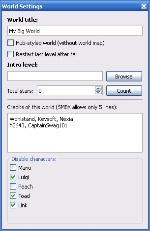

This is a main toolbox which allow to you tp configure the world map and episode settings.
World Title - the episode name which will be displayed in the episode list of the game menu.
Hub-styled world map - this option disable using of the world map, but you must set intro level which will be used as main hub.
Restart last level after fail - If player was fail on some level, it will be restarted without kicking into world map or into the hub level.
Intro level - the level which will started before world map will be shown.
Total stars - this value defining the total stars number which will be displayed in the game menu while player selecting the save for continue last game.
Credits - the special field which allow add credit list which will be shown in the credits screen after end of the game.
Disable character - these flags disabling possibles for select the character in the game menu.
World map settings toolbox

This feature will help you to count all stars which exists on the levels which defined on this map.
After counting value will be stored into stars number field.
Copyright © 2014-2015 Platformer Game Engine by Wohlstand project. All rights reserved.